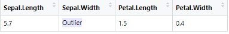

routlier_quantile.RdRoutlier: Simple data frame from routlier:
routlier_quantile(data,type,outlier_type)
| data | filepath to data |
|---|---|
| type | select type of quatile method to use. Choices from 1 to 7. |
| outlier_type | select type of outlier selecting either "M" for mild or "E" for extreme. |
Return's an outlier dataset from the original dataset in a formattable table. The data returned is currently the numeric data only from the dataset.
The word 'Outlier' will replace the value that is an outlier in the respective cell.

## Load the routlier library ## Look at outliers utilizng the Tukey method routlier_quantile(data = iris,type = 7,outlier_type="M")#> [1] "The IQR for column 1 is from: 8.35 : 3.15 and the overall IQR range is: 5.2" #> [1] "The IQR for column 2 is from: 4.05 : 2.05 and the overall IQR range is: 2" #> [1] "The IQR for column 3 is from: 10.35 : -3.65 and the overall IQR range is: 14" #> [1] "The IQR for column 4 is from: 4.05 : -1.95 and the overall IQR range is: 6" #> [1] "You have a total of 4 Outliers in your dataset"